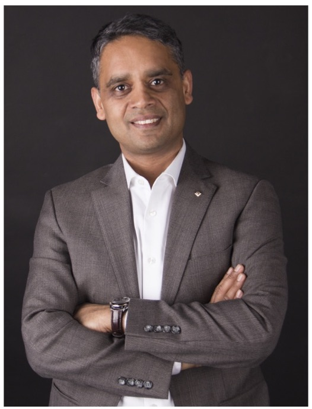

|
SIGNIS: Softwarized Next Generation Networks for IoT ServicesWorkshop co-located withIEEE Global Communications Conference (GLOBECOM)Madrid, SpainDecember 7-11, 2021 |

CALL FOR PAPERS
The workshop on Softwarized Next Generation Networks for IoT Services (SIGNIS) intends to leverage communication, softwarization, and learning for provisioning IoT services, with the integration of different platforms such as cloud and fog/edge computing platforms in handling the heterogeneous and numerous IoT traffic generated in the network of 6G and beyond, along with the different network architectures such as Information- and Service-Centric Networking (ICN and SCN) including Service-Oriented Network Architecture (SONA). SIGNIS aims to bring together researchers working not only on improving the network infrastructure to accommodate IoT services but also on realizing real-time IoT services in various domains such as smart cities, smart grid, vehicular networks, underwater networks, and so on. The authors are expected to share their new ideas, latest findings, and results in the following topics but not limited to:
For more information, please see IEEE GLOBECOM 2021 official website: https://globecom2021.ieee-globecom.org/workshop/ws-05-workshop-signis-softwarized-next-generation-networks-iot-services
COMMITTEE
Workshop Organizers
 |
 |
 |
Ayan Mondal Univ Rennes, Inria, CNRS, IRISA, France ayan.mondal@irisa.fr |
Arijit Roy University of Luxembourg, Luxembourg arijit.roy@uni.lu |
Sudip Misra FNASc (India), FNAE (India), FIET (UK), FBCS (UK), FIETE (India), FRSPH (UK) Indian Institute of Technology, Kharagpur, India sudipm@iitkgp.ac.in |
Workshop TPC Members
SUBMISSION
The page length limit for all initial submissions for review is SIX (6) printed pages (10-point font) and must be written in English. Initial submissions longer than SIX (6) pages will be rejected without review.
All final submissions of accepted papers must be written in English with a maximum paper length of six (6) printed pages (10-point font) including figures. No more than one (1) additional printed page (10-point font) may be included in final submissions and the extra page (the 7th page) will incur an over length page charge of US$100. All final papers must be submitted to the IEEE Conference eXpress website. Please refer to the acceptance letter for the instructions on how to upload final papers.
You may also use one of the following templates for Microsoft Word: A4, US letter.
Download Standard IEEE conference templates for LaTeX formats >>
If you have any questions regarding the submission of manuscripts, please contact one of the Technical Program Chairs of the Symposia that you are submitting a paper.
For paper submission, please follow the following link: https://edas.info/N28619
IMPORTANT DATES
July 31, 2021 August 14, 2021 (Firm Deadline)
PROGRAM
December 7, 2021
Keynote Talk
Title: The Emerging Paradigms of Federated Learning and Multi-Agent Reinforcement Learningfor Future Wireless IoT
Summary: Federated Learning (FL) and Multi-agent Reinforcement Learning (MARL) are two emerging machine learning paradigms for future intelligent wireless IoT and networked systems. FL is a data-driven supervised machine learning setting where the centralized location trains a learning model by using remote devices (e.g., sensors, user devices). On the other hand, the decentralized MARL schemes, which are based on interactions of the learning agents with the environment, present suitable frameworks to solve decision and control problems considering the heterogeneity of IoT systems. In this talk, I shall discuss example applications and also the challenges of employing FLand MARL methods in resource-constrained and unreliable wireless IoT systems and networks. I shall present an FL algorithm that is suitable for a resource-constrained wireless access network and also a MARL method for a practical wireless edge computing environment. To this end, I shall discuss the open research issues.

Ekram Hossain, Ph.D., P.Eng., FIEEE, FCAE, FEiC
Professor and Associate Head (Graduate Studies)
Department of Electrical and Computer Engineering
University of Manitoba, Canada
Web: home.cc.umanitoba.ca/~hossaina
Bio: Ekram Hossain (IEEE Fellow) is a Professor in the Department of Electrical and Computer Engineering at University of Manitoba, Winnipeg, Canada. He is a Member (Class of 2016) of the College of the Royal Society of Canada, a Fellow of the Canadian Academy of Engineering, and also a Fellow of the Engineering Institute of Canada (http://home.cc.umanitoba.ca/~hossaina). He was elevated to an IEEE Fellow "for contributions to spectrum management and resource allocation in cognitive and cellular radio networks". He was a Clarivate Analytics Highly Cited Researcher in Computer Science in 2017, 2018, 2019, and 2020.Dr. Hossain won several research awards including the 2017 IEEE Communications Society Best Survey Paper Award, and the 2011 IEEE Communications Society Fred Ellersick Prize Paper Award. He received the 2017 IEEE ComSoc TCGCC (Technical Committee on Green Communications & Computing) Distinguished Technical Achievement Recognition Award “for outstanding technical leadership and achievement in green wireless communications and networking”. He serves as the Director of Magazines for the IEEE Communications Society (2020-2021). Dr. Hossain was an elected Member of the Board of Governors of the IEEE Communications Society for the term 2018-2020. He was a Distinguished Lecturer of the IEEE Communications Society and IEEE Vehicular Technology Society.
Panel Discussion
Title: Ultra-Low Latency Softwarized Mobile Networking for IoT
Summary: Federated Learning (FL) and Multi-agent Reinforcement Learning (MARL) are two emerging machine learning paradigms for future intelligent wireless IoT and networked systems. FL is a data-driven supervised machine learning setting where the centralized location trains a learning model by using remote devices (e.g., sensors, user devices). On the other hand, the decentralized MARL schemes, which are based on interactions of the learning agents with the environment, present suitable frameworks to solve decision and control problems considering the heterogeneity of IoT systems. In this talk, I shall discuss example applications and also the challenges of employing FLand MARL methods in resource-constrained and unreliable wireless IoT systems and networks. I shall present an FL algorithm that is suitable for a resource-constrained wireless access network and also a MARL method for a practical wireless edge computing environment. To this end, I shall discuss the open research issues.
Professor Kwang-Cheng Chen, IEEE Fellow
University of South Florida, Tampa, Florida, USA
Bio: Kwang-Cheng Chen has been a Professor at the Department of Electrical Engineering, University of South Florida, since 2016. From 1987 to 2016, Dr. Chen worked with SSE, Communications Satellite Corp., IBM Thomas J. Watson Research Center, National Tsing Hua University, HP Labs., and National Taiwan University in mobile communications and networks. He visited TU Delft (1998), Aalborg University (2008), Sungkyunkwan University (2013), and Massachusetts Institute of Technology (2012-2013, 2015-2016). He founded a wireless IC design company in 2001, which was acquired by MediaTek Inc. in 2004. He has been actively involving in the organization of various IEEE conferences and serving editorships with a few IEEE journals, together withvarious IEEE volunteer services to the IEEE, Communications Society, Vehicular Technology Society, and Signal Processing Society,such as founding the Technical Committee on Social Networks in the IEEE Communications Society. Dr. Chen also has contributed essential technology to various international standards, namely IEEE 802 wireless LANs, Bluetooth, LTE and LTE-A, 5G-NR, and ITU-T FG ML5G. He has authored and co-authored over 300 IEEE publications, 4 books published by Wiley and River (most recently, Artificial Intelligence in Wireless Robotics, 2020), and more than 24 granted US patents. Dr. Chen is an IEEE Fellow and has received a number of awards including 2011 IEEE COMSOC WTC Recognition Award, 2014 IEEE Jack Neubauer Memorial Award, 2014 IEEE COMSOC AP Outstanding Paper Award. Dr. Chen’s current research interests include wireless networks, artificial intelligence and machine learning, quantum communications and computing, IoT/CPS, social networks and data analytics, and cybersecurity.
Title: System Level Security of IoTs
Summary: Most IoT systems involve the physical environment, IoT devices, communication protocols, IoT applications, and mobile apps for notification and remote control. However, existing IoT security analyses only focus on a subset of all the essential components, such as device firmware or software application, and ignore IoT systems’ interactive nature, resulting in limited attack detection capabilities. In this talk, we will discuss a logic programming-based framework to perform system-level security analysis for IoT systems. The framework generates attack graphs for IoT systems, showing all of the system resources that can be compromised and enumerating potential attack traces. We will discuss novel techniques to scan IoT systems for individual vulnerabilities, and further create generic exploit models for IoT vulnerabilities. We will also identify and model different types of IoT device dependencies. In particular, we utilize NLP techniques to extract IoT app semantics based on app descriptions. To evaluate vulnerabilities’ system-wide impact, we propose a suite of metrics based on the attack graph, which provide guidance on fortifying IoT systems. Evaluation on 127 IoT CVEs show that Iota’s exploit modeling module achieves over 80% accuracy in predicting vulnerabilities’ precondition and effects.
Professor Prasant Mohapatra, IEEE Fellow
Vice Chancellor for Research
Distinguished Professor of Computer Science
Department of Computer Science
2063 Kemper Hall
University of California
Davis, CA
Bio: Dr. Prasant Mohapatra is serving as the Vice Chancellor for Research at University of California, Davis. He is also a Distinguished Professor in the Department of Computer Science. In the past, Dr. Mohapatra has also held Visiting Scientist positions at Intel Corporation, Panasonic Technologies, Institute of Infocomm Research (I2R), Singapore, and National ICT Australia (NICTA).
Dr. Mohapatra received his doctoral degree from Penn State University in 1993, and received an Outstanding Engineering Alumni Award in 2008. He is also the recipient of Distinguished Alumnus Award from the National Institute of Technology, Rourkela, India. Dr. Mohapatra received an Outstanding Research Faculty Award from the College of Engineering at the University of California, Davis. He received the HP Labs Innovation awards in 2011, 2012, and 2013. He is a Fellow of the IEEE and a Fellow of AAAS.
Dr. Mohapatra's research interests are in the areas of wireless networks, mobile communications, cybersecurity, and Internet protocols. He has published more than 350 papers in reputed conferences and journals on these topics. Dr. Mohapatra's research has been funded through grants from the National Science Foundation, US Department of Defense, US Army Research Labs, Intel Corporation, Siemens, Panasonic Technologies, Hewlett Packard, Raytheon, and EMC Corporation.
Title: Blockchain-enabled IoT systems
Summary: This work proposes Practical Byzantine Fault Tolerance (PBFT) ordering service needed for block formation in permissioned blockchain environments. Contrary to current PBFT implementations that only provide a single point of entry to the ordering service, we allow each ordering node to act as an entry point that proposes and conducts the consensus process of including new record in the distributed ledger. To ensure atomicity of record insertion in distributed ledger, we have developed a bandwidth reservation protocol that uses a modification of CSMA/CA protocol to regulate access to the broadcast medium formed by the P2P network of TCP connections between orderers. We also address cluster interconnections which can increase coverage and capacity of PBFT system.
Professor Jelena Mišić, IEEE Fellow
Department of Computer Science
Ryerson University, Canada
Bio: Jelena Mišić is a Professor in the Department of Computer Science at Ryerson University, Canada. She received her PhD in Computer Engineering from University of Belgrade, Serbia, in 1993. She is an internationally recognized expert in the area of IoT, blockchain, wireless networking and network security, where she has authored or co-authored four books, 150+ journal papers, 24 book chapters, and 210+ conference papers. She has chaired more than a dozen major international events and guest-edited more than a dozen special issues of various journals. She serves on the editorial boards of IEEE Transactions on Vehicular Technology, IEEE Internet of Things Journal, IEEE Network, and Ad Hoc Networks journal (published by Elsevier). She is IEEE Fellow, ACM member and serves as IEEE VTS distinguished lecturer.
Presentation Session
Mir Wajahat Hussain; Soumen Moulik; Diptendu Sinha Roy
Ashish Adhikari; Danda B. Rawat
Gaurang Bansal; Biplab Sikdar
Tawan Hohum; Kalika Suksomboon; Aimaschana Niruntasukrat; Sophon Mongkolluksamee; Natapon Tansangworn
Sudeep Tanwar; Rajesh Gupta
Sudeep Tanwar; Anuja Nair; Rajesh Gupta
Shrikant Saxena; Shivang Khare; Sujata Pal
Prayakhi Emee Dutta; Himadri Neog; Nabajyoti Medhi
Puja Das; Moutushi Singh; Deepsubhra Guha Roy
Zhonglin Sun; Yannis Spyridis; Achilleas Sessis; Georgios Efstathopoulos; Elisavet Grigoriou; Thomas Lagkas; Panagiotis Sarigiannidis
Ilias Siniosoglou; Vasilis Argyriou; Thomas Lagkas; Apostolos Tsiakalos; Antonios Sarigiannidis; Panagiotis Sarigiannidis
Swadhin Barisal; Pushkar Kishore; Durga Mohapatra